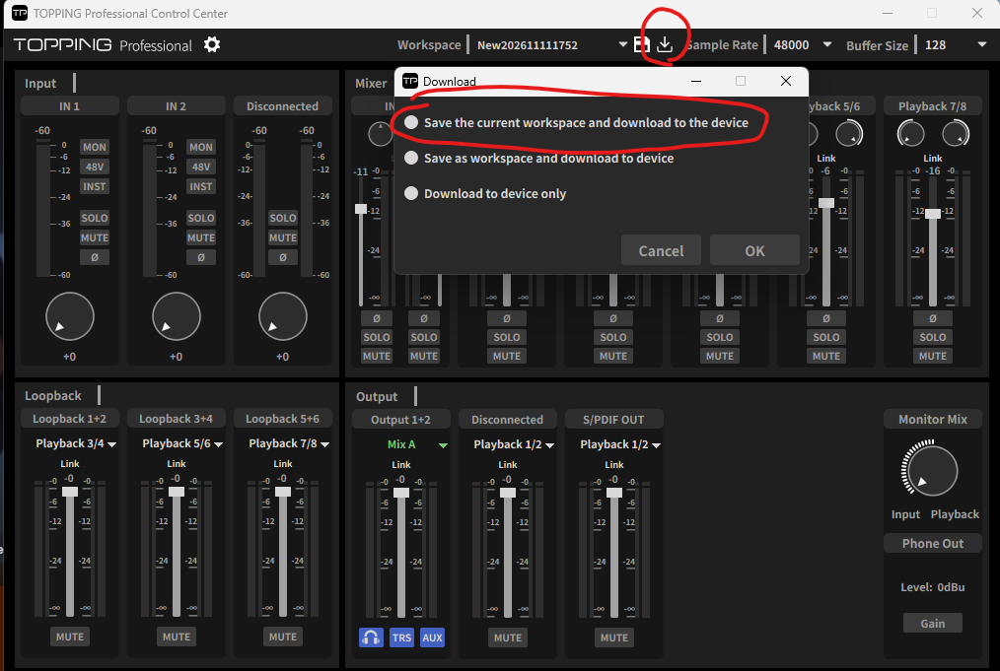

Elgato Stream Deck의 키와 다이얼로 TOPPING E2x2 OTG 믹서를 조작하는 플러그인입니다. 장치와 USB(HID)로 직접 통신합니다. 키마다 Mix와 채널을 정해 두면, 토핑 앱 화면에 어떤 Mix가 떠 있든 정해 둔 대상만 움직입니다.
만든 사람: 김탄2
아래가 갖춰져 있어야 합니다.
| 항목 | 필요한 것 |
|---|---|
| 컴퓨터 | Windows 10 이상 |
| 스트림덱 프로그램 | Stream Deck 소프트웨어 7.3 이상 |
| 오디오 인터페이스 | TOPPING E2x2 OTG와 TOPPING 공식 드라이버 (플러그인은 드라이버를 바꾸지 않습니다) |
| TOPPING 앱 | TOPPING Professional Control Center. 켜 둔 채로 함께 써도 됩니다 |
| 설치 파일 | TOPPING-E2x2-OTG.streamDeckPlugin |
다이얼 액션(VU dial, Pan dial, 디지털 게인 다이얼)은 Stream Deck +에서만 쓸 수 있습니다. 키 액션은 모든 Stream Deck에서 쓸 수 있습니다.
이 플러그인이 바꾼 값은 TOPPING 앱 화면에 보이지 않습니다. 그리고 앱이 그 값을 다시 덮어쓸 수 있습니다.
장치는 지금 믹서 값이 얼마인지 알려 주지 않습니다. 그래서 플러그인은 값을 직접 기억하고, TOPPING 앱의 작업 공간 파일(.TPwork)을 읽어 값을 맞춥니다. 앱에서 Mix 화면을 바꾸거나 앱을 다시 켜면, 앱은 자기가 기억하는 값으로 장치를 되돌립니다. Stream Deck으로 바꾼 값을 앱에도 맞추려면 토핑 앱 다시 켜기 키를 쓰세요(아래 참고). 이때 TOPPING 앱이 2~3초 꺼졌다 다시 켜집니다.
TOPPING-E2x2-OTG.streamDeckPlugin 파일을 더블클릭합니다.
스트림덱 프로그램이 설치할지 물어보면 설치를 누릅니다. 이미 설치되어 있어 덮어쓸지 물어도 설치를 고르면 됩니다. 기존 키 설정은 그대로 남습니다.
오른쪽 액션 목록에 Controller for TOPPING E2x2 OTG 카테고리가 생겼는지 확인합니다.
아무 액션이나 키에 올리고 클릭하면 아래에 설정 화면이 나옵니다. 맨 위 언어에서 한국어, English, 日本語를 고를 수 있습니다. 고른 언어는 모든 액션에 같이 적용됩니다.
플러그인은 TOPPING 앱이 지금 연 작업 공간을 읽어서 시작합니다. 그래서 앱에 작업 공간이 열려 있으면 따로 할 일은 없습니다. 키에 SETUP이 떠 있다면 아직 읽을 작업 공간이 없다는 뜻입니다. 이때는 아래 중 하나를 하세요.
앱에서 작업 공간 열기: TOPPING 앱 위쪽 Workspace 목록에서 작업 공간을 고릅니다. 몇 초 안에 키가 그 값으로 바뀝니다.
Workspace 불러오기 키 누르기: 아래 "Workspace 키"를 참고해 불러오기 키를 만들고 누릅니다.
앱에서 값을 바꾼 뒤에는 앱에서 작업 공간을 저장하세요. 저장하면 플러그인이 바뀐 값을 다시 읽습니다.
Mix A의 Playback 1/2 볼륨을 키 하나로 1 dB씩 올리는 예시입니다.
액션 목록에서 Fader를 키에 끌어다 놓습니다.
설정 화면에서 대상을 Mix 채널로, Mix를 A로, 채널을 Playback 1/2로 고릅니다.
모드를 단계 조절로 두고, 조절 단위 (dB, 음수 = 내리기)에 1을 적습니다.
키를 누를 때마다 1 dB씩 올라갑니다. 내리는 키는 같은 방법으로 만들고 -1을 적으면 됩니다.
키 두 개를 위·아래로 붙여 쓰고 싶다면 Button fader (2 keys)가 더 편합니다. 두 키에 걸쳐 페이더가 그려지고, 누르고 있으면 계속 움직입니다.
| 액션 | 하는 일 |
|---|---|
| Mute (음소거) | 대상의 음소거 켜기/끄기/토글 |
| Solo (솔로) | Mix 채널의 솔로 켜기/끄기/토글 |
| 입력 옵션 (48V, INST, Ø) | IN 1, IN 2, Mobile 입력의 48V 팬텀 전원, INST, Ø(위상 반전) |
| LINK (스테레오 묶기) | Mix별로 스테레오 채널 묶기/풀기 |
| 출력 컨트롤룸 | 헤드폰 게인(LOW / HIGH), 모니터 HP / TRS / AUX 켜기·끄기 |
| 페이더 | 볼륨을 정해 둔 값으로 맞추기(값으로 설정) 또는 한 단계씩 올리고 내리기(단계 조절) |
| 페이더 (2키) | 키 두 개(위·아래 또는 왼쪽·오른쪽)로 볼륨 올리기/내리기. 누르고 있으면 반복 |
| VU 다이얼 | 돌리면 볼륨, 누르면 음소거(또는 지정 볼륨으로 복귀), 레벨 미터 표시 |
| Pan (팬) | Mix 채널의 팬 (키) |
| Pan 다이얼 | Mix 채널의 팬 (다이얼, 누르면 가운데) |
| 디지털 게인 | 입력 디지털 게인 (키, 0 ~ +20 dB) |
| 디지털 게인 다이얼 | 입력 디지털 게인 (다이얼, 누르면 입력 음소거) |
| Output Source Select (출력 소스 선택) | 루프백과 출력(Out 1/2, Mobile Out, S/PDIF)에 보낼 소리 고르기 |
| 작업 공간 불러오기/저장 | 작업 공간 불러오기 / 현재 값을 새 작업 공간으로 저장 (아래 참고) |
| 토핑 앱 다시 켜기 | TOPPING 앱을 강제로 닫고 다시 켜서 앱 화면과 키 값을 맞추기 (아래 참고) |
Fader, Button fader, VU dial, Mute는 대상에서 셋 중 하나를 고릅니다.
| 대상 | 뜻 |
|---|---|
| Mix 채널 | Mix A~D 안의 채널 하나(IN, Playback, Loopback 등). Mix와 채널을 함께 고릅니다 |
| 루프백 | Loop 1/2, 3/4, 5/6 |
| 출력 | Out 1/2, Mobile Out, S/PDIF |
출력이 듣는 Mix 따라가기 (페이더, 페이더 2키, VU 다이얼, Mute, Pan, Pan 다이얼, LINK): Mix 목록 맨 아래에서 고르고 따라갈 출력(Out 1/2, Mobile Out, S/PDIF)을 정합니다. 키는 그 출력의 소스가 지금 Mix A~D 중 무엇이냐에 따라 그 Mix의 채널을 조절하고, 키의 Mix 표시도 따라 바뀝니다. Mix마다 볼륨이 달라서 출력이 다른 Mix로 바뀌면 소리가 갑자기 커질 수 있습니다. 바꾸기 전에 볼륨을 낮추고, 들을 때 주의하세요. 출력의 소스가 Mix가 아니면 키에 NOT A MIX가 뜨고 아무것도 하지 않습니다.
LINK가 꺼진 채널은 L과 R이 따로 움직입니다. 이때 Mute, Solo, Pan 키는 좌/우에서 양쪽 (페어), L만, R만을 고를 수 있습니다. 볼륨 키, Button fader, VU dial은 항상 양쪽에 동작합니다.
모든 채널 키는 이름 칸에 적은 글자를 키에 표시합니다. 비워 두면 기본 이름이 나옵니다(최대 24자).
대상에서 소리를 보낼 곳(루프백 또는 출력)을 고르고, 모드에서 고르는 방식을 정합니다.
MIX A~D 번갈아 선택: 누를 때마다 MIX A → B → C → D 순서로 바뀝니다.
고른 소스 안에서 번갈아 선택: 소스 목록에서 체크한 것들만 차례로 바뀝니다.
두 소스 사이 토글: 소스 1과 소스 2 사이를 오갑니다.
모드에서 불러오기 또는 저장을 고릅니다.
불러오기: 작업 공간 목록에서 저장된 작업 공간을 고릅니다. 키를 누르면 그 값을 장치에 보내고, 모든 키가 그 값으로 바뀝니다. 마지막으로 불러온 키는 켜진 것처럼 표시됩니다.
저장: 새 작업 공간 이름을 적습니다. 키를 누르면 지금 값을 그 이름의 작업 공간 파일로 저장합니다. 저장한 작업 공간은 TOPPING 앱을 다시 켜면 앱 목록에도 나옵니다.
장치에도 기록 (저장 모드, 기본으로 켜짐): 켜 두면 저장할 때 값을 장치 안에도 기록합니다. 오인페 전원을 껐다 켜도 그 값이 남습니다. TOPPING 앱의 다운로드와 같은 일을 합니다. 끄면 파일만 저장합니다.
토핑 앱 다시 켜서 맞추기 (두 모드 모두, 기본으로 켜짐): 저장이나 불러오기가 끝나면 TOPPING 앱을 강제로 닫고, 그 작업 공간을 연 채로 알림 영역에 다시 켭니다. 앱은 켜질 때 그 작업 공간을 장치에 보내므로, 앱 화면·장치·키가 모두 같은 값이 됩니다. 앱이 2~3초 꺼졌다 켜지고, 앱에서 바꾸고 저장하지 않은 값은 사라집니다. 원하지 않으면 끄세요.
저장할 때 알아 둘 점
토핑 앱 다시 켜서 맞추기를 끈 키는 TOPPING 앱이 지금 열어 둔 작업 공간 이름으로 저장하지 않습니다. 앱이 꺼질 때 자기 값으로 다시 덮어쓰기 때문입니다. 설정 화면에 "저장할 수 없습니다"가 뜨면 다른 이름을 적으세요. 이 옵션을 켠 키는 앱을 강제로 닫아 덮어쓰기가 일어나지 않으므로 그 이름으로도 저장합니다.
같은 이름의 작업 공간이 이미 있으면 덮어씁니다. 바로 전 파일 하나만 같은 폴더에 숨김 파일 .E2X2_OTG_<이름>.TPwork.bak으로 남습니다. 백업은 이름마다 하나이고, 덮어쓸 때마다 그 직전 값으로 바뀝니다.
장치가 연결되어 있지 않으면 파일만 저장하고, 키에 ⚠를 띄우고 설정 화면에 그 사실을 알려 줍니다.
앱에서 직접 장치에 기록하는 방법: TOPPING 앱 위쪽의 작업 공간 이름 오른쪽 다운로드 아이콘을 누르고, 첫 번째 항목(현재 작업 공간을 저장하고 장치에 다운로드)을 골라 OK를 누릅니다.

TOPPING 앱은 꺼질 때 자기가 기억하는 값을 작업 공간 파일에 저장하고, 켜질 때 그 파일을 장치에 보냅니다. 그래서 Stream Deck으로 바꾼 값은 앱을 껐다 켜면 되돌아갑니다. 이 키는 앱을 강제로 닫아(종료 저장 없이) 다시 켜서 이 어긋남을 없앱니다. 모드에서 고릅니다.
토핑앱 설정 맞추기 (기본): 지금 키 값을 앱이 열고 있는 작업 공간에 저장한 뒤 앱을 다시 켭니다. Stream Deck 값이 기준이 됩니다. 그 작업 공간에 저장돼 있던 값은 덮어씌워집니다. 바로 전 값 하나만 백업으로 남습니다.
직전으로 되돌리기: 앱이 열고 있는 작업 공간을 마지막 저장 바로 전 값(백업)으로 되돌린 뒤 앱을 다시 켭니다. 한 번 더 누르면 새 값으로 돌아갑니다. 백업이 없으면 키에 ⚠가 뜹니다.
토핑앱 재실행: 저장하지 않고 앱만 다시 켭니다. 앱에 저장된 작업 공간 값이 기준이 되고, 장치와 키도 그 값으로 돌아갑니다.
앱이 꺼져 있었다면 키를 누를 때 앱을 켭니다. 앱이 5초 안에 닫히지 않으면 아무것도 바꾸지 않고 키에 ⚠를 띄웁니다.
미터는 소리가 나올 때만 움직입니다.
미터는 채널마다 있습니다. Mix 채널은 그 채널의 미터, 루프백은 루프백의 미터, 출력은 출력의 미터를 보여 줍니다.
OTG 입력도 미터를 표시합니다.
| 표시 / 증상 | 뜻 | 할 일 |
|---|---|---|
| OFFLINE | 장치가 연결되어 있지 않음 | USB 케이블과 전원 확인. 다시 연결되면 자동으로 돌아옵니다 |
| SETUP | 아직 불러온 작업 공간이 없음 | TOPPING 앱에서 작업 공간을 열거나 Workspace 불러오기 키 누르기 |
| SET CHANNEL | 키 설정이 끝나지 않음 | 설정 화면에서 대상, 채널, 이름 등을 고르기 |
| ⚠ (잠깐 뜸) | Workspace 키나 토핑 앱 다시 켜기 키가 실패함 | 설정 화면 위쪽의 안내 문구 확인 |
| 값이 앱 화면과 다름 | 플러그인으로 바꾼 값은 앱에 보이지 않음 | 토핑 앱 다시 켜기 키(토핑앱 설정 맞추기) 누르기 |
| Stream Deck으로 바꾼 값이 되돌아감 | 앱이 Mix 화면 전환이나 재시작 때 자기 값을 다시 보냄 | 저장·불러오기 키의 토핑 앱 다시 켜서 맞추기를 켜 두거나, 토핑 앱 다시 켜기 키 누르기 |
입력의 Solo는 장치에서 아무 효과가 없습니다.
볼륨은 최대 +12 dB, 디지털 게인은 0 ~ +20 dB입니다. LINK 상태의 팬도 TOPPING 앱과 똑같이 움직입니다.
48V는 켤 때 설정 화면에 경고만 표시합니다. 키를 누르면 바로 켜지므로, 콘덴서 마이크가 아닌 장비를 연결한 채 켜지 않도록 주의하세요.
기기에서 직접 누른 INST, 모니터링, 48V, 헤드폰 게인 버튼은 키에도 바로 반영됩니다. 모니터링 노브(Input ↔ Playback)는 아직 반영하지 않습니다.
플러그인은 장치 USB 드라이버를 바꾸지 않습니다. 공식 드라이버로 쓸 수 있는 HID 통신만 씁니다.
사용 중 문제가 있거나 궁금한 점이 있으면 만든 사람(김탄2)에게 문의해 주세요.
Discord: kimtan2
치지직(Chzzk): 김탄2
TOPPING은 TOPPING의 상표입니다. Stream Deck은 Elgato(Corsair)의 상표입니다. 이 플러그인은 이들과 관계없는 비공식 프로젝트입니다.